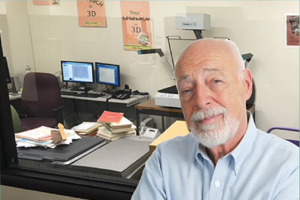

Content Stabilization
Content Stabilization is a general term for automatic and manual varieties of image treatment that can be performed during or after scan time with the purpose of producing clean, clear and consistently formatted digital images.
Book curve, skew, fan, gutter and black edges are automatically adjusted to render clean, consistent margins of uniform size and text position for a clean, professional look.

Content Stabilization is typically applied automatically in batch after scan time and includes features like:
Book Curve Collection
Image Deskew
Margin Alignment and Uniformity
Horizontal and Vertical Centering
Black Border Removal
Finger Image Removal
Bleedthrough Correction
Reflection/Glare Correction
One more of the image treatment features above can be applied to a single image, to selected images , or all the images in a given batch. Manual Content Stabilization allows users even more precise control of the image treatment listed above and can be applied to one, many or all images in the same group.